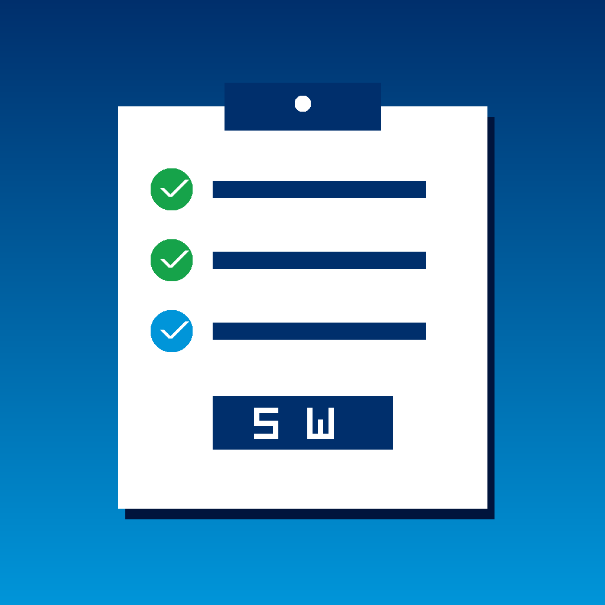
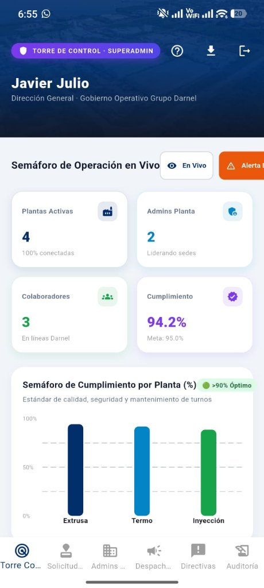
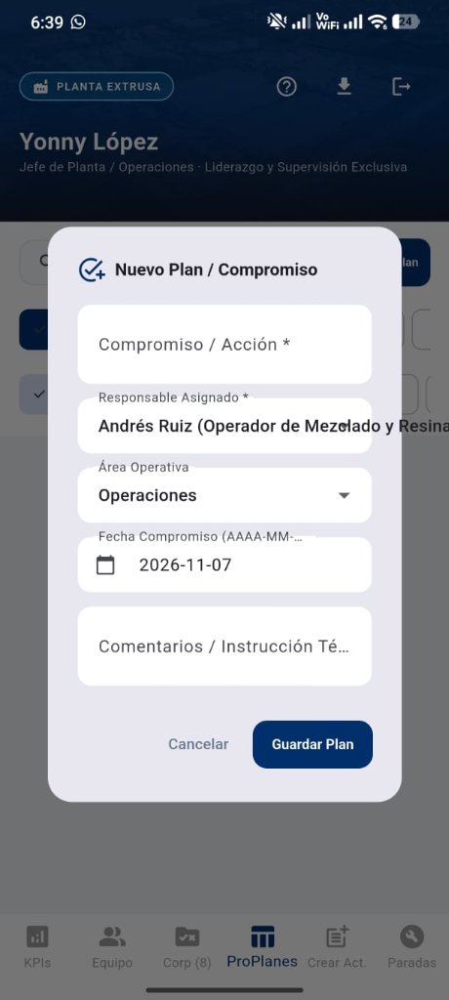
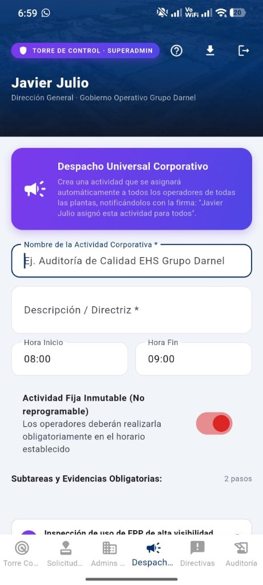
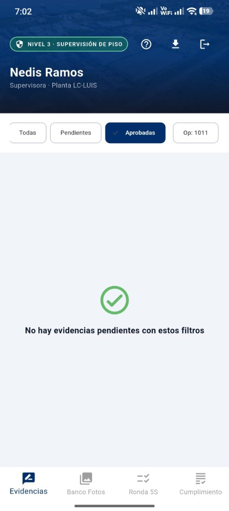

Título de la Captura
Descripción detallada de la funcionalidad.

Plataforma multiplataforma (Android, iOS y Web) para el seguimiento de rutinas de planta, control 5S y planes de acción, preparada para integración nativa con Microsoft SharePoint y Microsoft Entra ID.
Instalable mediante APK directo en los celulares o tablets de planta asignadas a operadores y supervisores.
Aplicación Web Progresiva instalable en Safari sin obligar a la empresa a publicar en la App Store pública.
Acceso directo desde Microsoft Edge o Google Chrome para Jefes de Planta, Supervisores y Dirección General.
| Criterio Técnico | Etapa Actual: Excel / Archivos Locales | Etapa Futura: Microsoft SharePoint Online |
|---|---|---|
| Centralización | Archivos dispersos Riesgo de desincronización y versiones obsoletas en los equipos de los usuarios. |
100% Centralizado Fuente única de la verdad en el tenant oficial de Darnel en Microsoft 365. |
| Autenticación | PIN y Cédula local en la base de datos de la aplicación. | Single Sign-On (SSO): Inicio de sesión con el correo empresarial `@darnel.com` respaldado por Microsoft Entra ID. |
| Concurrencia | Limitada Los archivos Excel compartidos pueden bloquearse o generar conflictos de guardado simultáneo. |
Multi-usuario Nativo Operadores, supervisores y directores actualizan tareas en paralelo sin colisiones. |
| Gobernanza TI | Control descentralizado en dispositivos individuales. | Políticas de TI activas: Respaldos automáticos en la nube, retención de datos, logs de auditoría y cumplimiento SOC2 / ISO. |
| Costos e Infraestructura | Sin costo adicional, pero con mantenimiento manual. | Costo CERO adicional: Aprovecha las licencias de Microsoft 365 y SharePoint que Grupo Darnel ya tiene contratadas. |




La integración con Microsoft 365 sigue los estándares oficiales de seguridad de Microsoft Entra ID:
TRACK60 - Grupo Darnel (Tipo: Single Tenant).
User.Read (identidad) y Sites.Selected o Sites.ReadWrite.All para las listas de SharePoint ya existentes.
Application (Client) ID y Directory (Tenant) ID.
Desarrollo funcional multiplataforma, pruebas en plantas piloto (Extrusión y Termoformado) y arquitectura de persistencia lista.
Configuración del App Registration en Entra ID y enlace de las listas existentes de SharePoint sin alterar datos operativos.
Acceso para todos los colaboradores con su cuenta @darnel.com, reportes automáticos en Power BI y control total de planta.
TRACK60 combina la agilidad móvil en piso de planta con la seguridad, gobierno y robustez de Microsoft 365. Con la aprobación y entrega de permisos de TI, consolidaremos una plataforma enterprise de estándar mundial para Grupo Darnel.